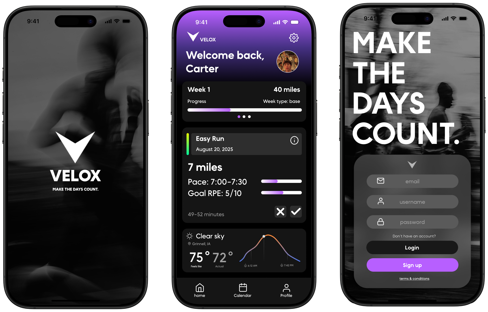
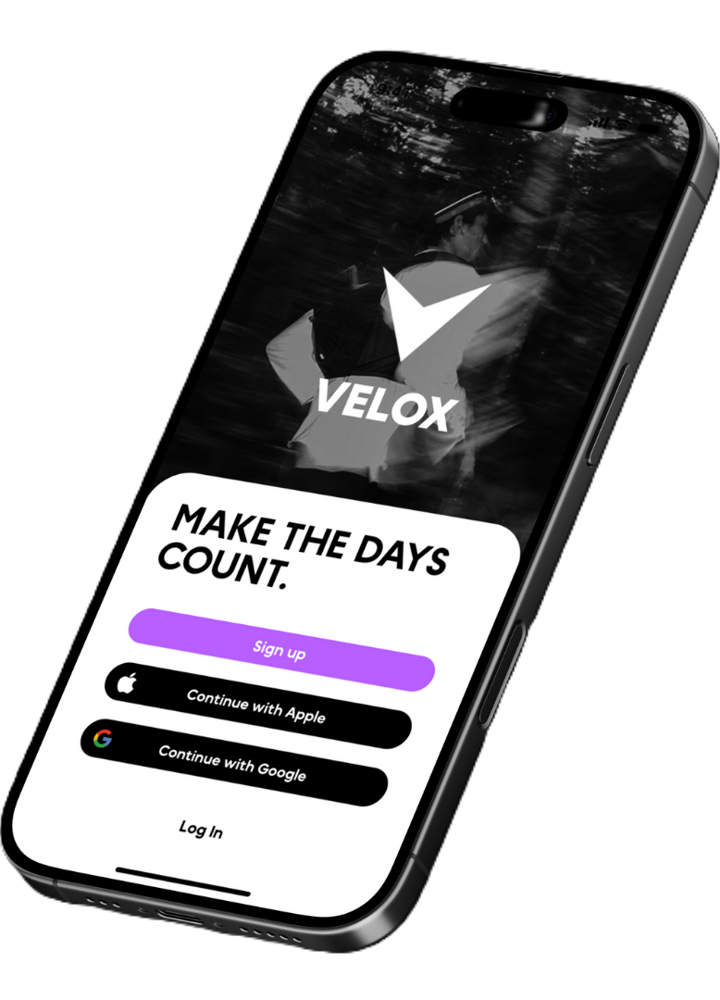
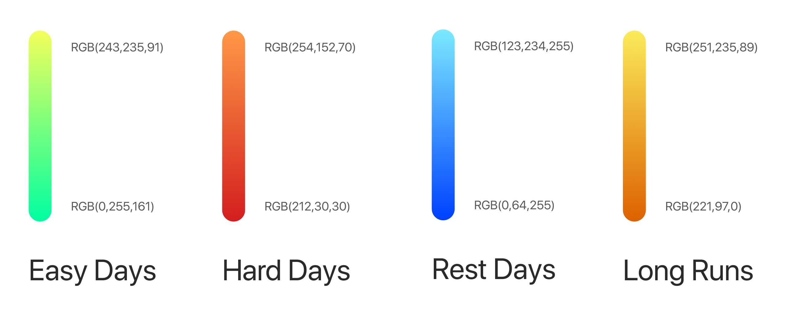
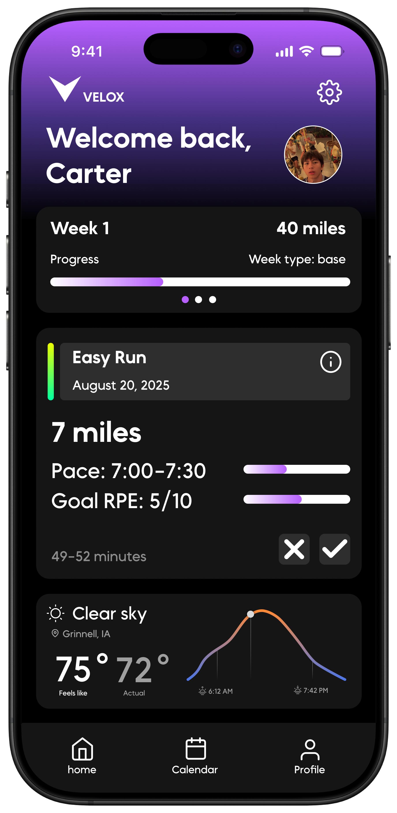

Velox
A mobile app designed to equip seasoned edurance runners with advanced adaptive training
plans, presented in a clean and memorable interface.

The Idea.

As a competitive endurance runner, I rely on data to fine-tune my training and maximize performance.
Yet most fitness apps cater to beginners, offering rigid plans and limited customization.
I saw an opportunity to design a platform tailored to advanced athletes, one that could intelligently
adapt to user feedback and progress while maintaining a clean, intuitive interface.
I was apart of a close-knit team of developers and designers to bring this vision to life.

The Process.
Research
Conducted user interviews and competitive analysis to identify pain points and opportunities in existing training apps. View Research
Design
Created wireframes, prototypes, and high-fidelity designs using Figma, focusing on usability and aesthetics.
Skills
UX/UI Design, Frontend Development, Backend Development, User Research, Wireframing, Usability Testing, Database Architecture.
Tools & Frameworks
Figma, Python, Swift, SQl, Git, Adobe Photoshop, Postgres, Github Adobe Illustrator, Tailscale.
The Breakdown.

